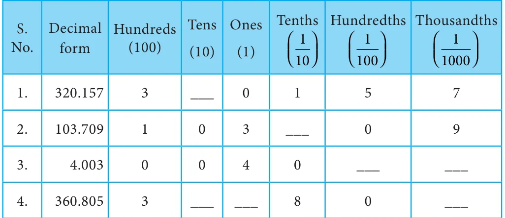
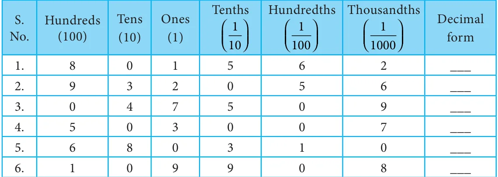

Example 1.12 Express the following as fractions (i) A capsule contains 0.85 mg of medicine.
- (ii)A juice container has 4.5 litres of mango juice.
Solution
- (i)\(0.85 = 0 + \frac{85}{10100} +\)
\(= \frac{8517}{10020} =\)
A capsule holds \(\frac{17}{20}\) mg of medicine.
- (ii)\(4.5 = 4 + \frac{5}{10}\)
\(= 4 \frac{51}{102} = 4\)
A juice container has \(4 \frac{1}{2}\) litres of mango juice.

- 1.Fill in the following place value table.

- 2.Write the decimal numbers from the following place value table.

- 3.Write the following decimal numbers in the place value table.
- (i)25.178 (ii) 0.025 (iii) 428.001 (iv) 173.178 (v) 19.54
- 4.Write each of the following as decimal numbers.
- (i)\(20 + 1 + \frac{237}{101001000} + +\) (ii) \(3 + \frac{845}{101001000} + +\)
- (iii)\(6 + \frac{009}{101001000} + +\) (iv) \(900 + 50 + 6 + \frac{3}{100}\)
- (v)\(\frac{631}{101001000} + +\)
- 5.Convert the following fractions into decimal numbers.
- (i)\(\frac{3}{10}\) (ii) 312 (iii) \(3 \frac{3}{5}\) (iv) \(\frac{3}{2}\) (v) \(\frac{4}{5}\) (vi) \(\frac{99}{100}\) (vii) \(3 \frac{19}{25}\)
- 6.Write the following decimals as fractions.
- (i)2.5 (ii) 6.4 (iii) 0.75
- 7.Express the following decimals as fractions in lowest form.
- (i)2.34 (ii) 0.18 (iii) 3.56
Objective type questions
- 8.\(3+ \frac{49}{1001000} + =\) ?
- (i)30.49 (ii) 3049 (iii) 3.0049 (iv) 3.049
- 9.\(\frac{3}{5} =\) _______
- (i)0.06 (ii) 0.006 (iii) 6 (iv) 0.6
- 10.The simplest form of 0.35 is
- (i)\(\frac{35}{1000}\) (ii) \(\frac{35}{10}\) (iii) \(\frac{7}{20}\) (iv) \(\frac{7}{100}\)